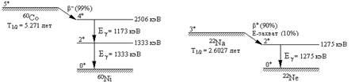

ВСТУП
Курс сучасної фізики починається з розділу «Квантова оптика», розвиток якого було визначено постулатом Планка про існування фотонів. Найбільш яскравим експериментальним доказом квантових властивостей електромагнітного випромінювання і існування фотона є ефект, відкритий американським фізиком А. Комптоном в 1923 р. Тому не можна відмовитися від вивчення цього ефекту , якщо ви цілком хочете зрозуміти, які проявлення матерії вивчає «Квантова механіка».
МЕТА РОБОТИ
Вивчити явище розсіювання γ-квантів на електронах і визначити комптонівську довжину хвилі електронів.
При підготовці до виконання роботи необхідно: вивчити теорію за темами «Гіпотеза Планка», «Ефект Комптона» [1], [2]; ознайомитись з методикою експерименту; знати виведення розрахункової формули та відповісти на контрольні питання.
ОСНОВНІ ТЕОРЕТИЧНІ ПОЛОЖЕННЯ
Ефект Комптона належить до класичних експериментів, що виявили корпускулярну природу електромагнітного випромінювання і в підсумку підтвердили корпускулярно-хвильову подвійність матерії. Класична електродинаміка після робіт Максвелла, здавалося, однозначно затвердила хвильову природу електромагнітного випромінювання. Величезне число дослідів по дифракції та інтерференції світла незаперечно підтверджували це. Однак, після відкриття рентгенівських променів і просування досліджень в область їх більш короткохвильового випромінювання, виникла принципово нова ситуація, яка вказала на те, що світло великої частоти (рентген, g-кванти) володіє явно вираженими властивостями частинок (корпускул).
У 1922 - 1923 році американський фізик А.Комптон, досліджував розсіювання рентгенівського випромінювання на легких елементах (графіт, парафін), валентні електрони яких слабо пов'язані з ядром. Схема дослідження приведена на рисунку 1. Монохроматичне випромінювання рентгенівської трубки через ряд колімаційних отворів прямувало на розсіювач, речовина якого складалася з легких елементів.
Розсіяне випромінювання потрапляло на рентгенівський спектрограф, що складається з кристала, на якому відбувалася дифракція, і іонізаційної камери, що фіксує дифраговані рентгенівські кванти. Розсіяне випромінювання могло фіксуватися під різними кутами φ. Довжина хвилі визначалася за кутом дифракції.
Рисунок 1 – Схема експерименту Комптона
Дослідження спектру розсіяного випромінювання показало, що під різними кутами розсіювання φ спостерігаються два піки: один з довжиною хвилі l0 (незміщена компонента), а інший – з довжиною хвилі l, більшою, ніж l0. При цьому були встановлені дві особливості процесу: 1) різниця довжин хвиль розсіяного і первинного випромінювань не залежить від природи розсіювача і довжини хвилі первинного випромінювання; 2) при зростанні атомного номера розсіювача інтенсивність незміщеної лінії зростає, інтенсивність зміщеної лінії зменшується.
З точки зору хвильових уявлень механізм розсіювання полягає "в розгойдуванні" електронів електромагнітним полем падаючої хвилі. Коливний електрон повинен в свою чергу випромінювати електромагнітну хвилю, що має частоту, рівну частоті коливань електрона, тобто частоті падаючої хвилі. Таким чином, вільні електрони розсіюють випромінювання, але при цьому частота (довжина хвилі) розсіяних хвиль повинна дорівнювати частоті (довжині хвилі) падаючих.
Зазначені суперечки були розв'язані Комптоном, коли він в моделі взаємодії розглянув електромагнітне випромінювання (в даному випадку рентгенівське випромінювання) як потік частинок (фотонів або квантів випромінювання), що мають імпульс
або (2.1)
і енергію
або , (2.2)
де – хвильовий вектор,
ν – частота падаючого випромінювання (w = 2πν),
с – швидкість світла,
h – постійна Планка,
та .
Тобто фотон веде себе, грубо кажучи, як кулька, яка рухається. У легких речовинах, з якими проводив досліди А.Комптон, енергія зв'язку електронів мала в порівнянні з енергією, що передана йому квантами рентгенівського випромінювання, і електрони можна вважати вільними. При комптонівському розсіюванні відбувається пружне зіткнення фотона з вільним електроном. За образним висловом М. Борна ефект Комптона – це гра в більярд фотонами і електронами.
Вирішимо задачу пружного зіткнення двох куль – фотона і вільного електрона, за умови, що початкова швидкість електрона дорівнює нулю (тобто в системі відліку, пов'язаній з електроном). Енергія електрона до зіткнення дорівнює mоc2 , де mо – маса спокою електрона, а його імпульс дорівнює нулю.
Рисунок 2 – Схема розсіювання фотона на вільному електроні
Після зіткнення (рис.2) імпульс електрона зміниться і стане рівним  (нерелятивістський випадок), а
його повна енергія (кінетична енергія плюс енергія спокою) буде дорівнювати Е
= .
(нерелятивістський випадок), а
його повна енергія (кінетична енергія плюс енергія спокою) буде дорівнювати Е
= .
Із законів збереження енергії та імпульсу витікає:
,
.
Або , (2.3)
. (2.4)
З отриманої системи рівнянь, якщо провести нескладні перетворення з урахуванням (2.1) (див. [2], [3]), можна отримати результат, що пояснює ефект Комптону:
(2.5)
де l0 і l – довжина хвилі фотона до і після зіткнення, а постійна
=Å (2.6)
називається комптонівською довжиною хвилі електрона.[1]
В результаті стало ясно, що зміщена компонента l відповідає пружному розсіюванню рентгенівського кванта на вільному електроні, який вивільнився в результаті відриву від атому (легкі елементи, типу вуглецю, мають на зовнішніх оболонках слабкозв'язаний електрон). Незміщена компонента відповідає розсіюванню на всьому атомі, при цьому переданий імпульс і енергія від рентгенівського кванта всьому атому настільки малі, що первісна енергія кванта залишається незмінною (отже, незмінна і довжина хвилі l0).
Формула (2.5) точно відповідає результатам експерименту і отримала назву «комптонівського зсуву» (збільшення довжини хвилі рентгенівського кванта після розсіювання), а саме явище – ефект Комптона.
ОПИС УСТАНОВКИ
На рис.3 зображено блок-схема установки «ефект Комптона» і схема сцинтиляційного g-спектрометра.
Рисунок 3 – 1 - контейнер з радіоактивним джерелом,
2 - розсіювач - стільбен,
3 - сцинтиляційний g-спектрометр:
3а - сцинтилятор NaI,
3б - свинцевий захист від космічних променів.
3.1 Радіоактивне джерело
Ізотопи 60Co (кобальт), 88Y (ітрій), 65Zn + 22Na (цинк і натрій), підібрані з розрахунку, щоб енергія їх g-квантів, лежала в такому діапазоні, в якому іншими ефектами взаємодії g-квантів в речовині розсіювача (фотоіонізація, народження електронно-позитронних пар) можна було б знехтувати.
Характерним для ізотопів 60Co, 88Y, 22Na є те, що вони випускають 2 g-кванта, а в нашому експерименті це дозволяє зробити порівняльний аналіз зміни довжин хвиль різних по енергії g-квантів. Зазвичай в якості радіоактивних джерел g-квантів використовуються бета-активні ізотопи. На рис.4 в якості прикладу показані схеми розпаду 60Co і 22Na. Ядро 60Co в основному при β--розпаді переходить у збуджений стан 4+ дочірнього ядра 60Ni. Цей збуджений стан переходить в основний за допомогою каскаду переходів з енергіями g-квантів 1173 і 1333 кеВ. Ядро 22Na відчуває β+-розпад. Також, як і в разі 60Co, розпад відбувається з утворенням дочірнього ядра у збудженому стані. 22Na є джерелом γ-квантів з енергією 1275 і 511 кеВ. Останні утворюються в результаті анігіляції позитронів, але їх енергія невелика та поглинається речовиною. Тому для порівняння енергій γ-квантів в експерименті ций ізотоп є доданим до ізотопу 65Zn.

Рисунок 4 – Спрощені схеми розпаду 60Co і 22Na.
3.2 Розсіювач
В якості розсіювача використовують стільбен – органічна речовина, що складається з атомів вуглецю і водню. Оскільки енергія зв'язку зовнішніх електронів цих атомів мала (потенціал іонізації водню 13,6 еВ і перший потенціал іонізації вуглецю 11,6 еВ), то при енергії g-квантів 0,6-0,7 МеВ зовнішні електрони можна розглядати як вільні. Ефект розсіювання на всьому атомі (когерентне розсіювання) за даних умов експерименту буде малий і незміщена компонента в розсіяних променях практично не буде спостерігатися.
3.3 Сцинтиляційний g-спектрометр
На відміну від кристал-дифракційного спектрометра, використаного Комптоном, сцинтиляційний спектрометр працює наступним чином. Гамма-квант, потрапляючи в спеціально підібрану речовину сцинтилятора (NaI), ефективно поглинається, виробляючи фотоіонізацію. Оскільки енергія g-кванта значно перевищує енергію іонізації електрона ħw >>Еі, то практично вся енергія g-кванта переходить в кінетичну енергію відірваного електрона, яка, в свою чергу, цілком витрачається на оптичні переходи атомів і гальмівне випромінювання електрона в речовині сцинтиллятора. Світло люмінесцентних спалахів потрапляє на фотокатод ФЕУ (фотоелектронний помножувач) і посилюється. При цьому виявляється, що амплітуда електричного імпульсу з фотопомножувача пропорційна енергії первинного g-кванта. Таким чином цей пристрій одночасно визначає і енергію і число g-квантів, що потрапили в сцинтилятор, тим самим даючи можливість знайти розподіл g -квантів по енергії, тобто спектр.
СПИСОК РЕКОМЕНДОВАНИХ ДЖЕРЕЛ
1. Трофимова Т.И. Курс физики, М.: Высшая школа,1990.-422с.
2. Савельев И.В. Курс физики, т. 3. -М.: Гл. ред. Физ.-мат. лит., 1989.
3. Детлаф А.А., Яворский Б.М. Курс физики, т. 3. М.: Высшая школа, 1989.
4. Геворкян Р.Г. Курс физики: Учеб.пособие.-М.:Высш. школа, 1997.-656с.